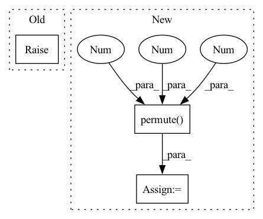

Pattern ID :35754

Before Change
self.data_format = data_format
def __call__(self, input):
raise NotImplementedError
def triu(data, diagonal=0):
After Change
N, C, H, W = input.shape
oC, oH, oW = C // (self.block_size * self.block_size), bH * H, bW * W
output = input.reshape(N, C, bH, bW, H, W)
output = output.permute(0, 1, 4, 2, 5, 3)
output = output.reshape(N, oC, oH, oW)
if self.data_format == "NHWC":
output = nchw_to_nhwc(output)
return output
def triu(data, diagonal=0):
In pattern: SUPERPATTERN
Frequency: 3
Non-data size: 3
Instances
Fragment ID: 101663887
Project Name: tensorlayer/tensorlayerx
Commit Name: c65412794b3c56405fd6268ed7314a6e6881912f
Time: 2022-03-10
Author: jiaronghan@outlook.com
File Name: tensorlayerx/backend/ops/torch_backend.py
M Class Name: DepthToSpace
N Class Name: DepthToSpace
M Method Name: __call__(2)
N Method Name: __call__(2)
M Parent Class: object
N Parent Class: object
M File Name: tensorlayerx/backend/ops/torch_backend.py
N File Name: tensorlayerx/backend/ops/torch_backend.py
M Start Line: 1171
M End Line: 1171
N Start Line: 1195
N End Line: 1206
'>
Before Change
_sr = self.sr[stage_idx]
print(_mixture_resampled.size(), _estimated_sources.size(), _sr)
raise NotImplementedError
_mixture_resampled = _mixture_resampled[0].squeeze(dim=0).cpu()
_estimated_sources = _estimated_sources[0].cpu()
After Change
_mixture_resampled = _mixture_resampled.squeeze(dim=1).cpu() // (batch_size, T)
_estimated_sources = _estimated_sources.squeeze(dim=2).cpu() // (batch_size, n_sources, T)
_mixture_resampled = _mixture_resampled.view(batch_size * T)
_estimated_sources = _estimated_sources.permute(1, 0, 2).contiguous().view(n_sources, batch_size * T)
save_dir = os.path.join(self.sample_dir, titles)
os.makedirs(save_dir, exist_ok=True)
'>
Fragment ID: 101663919
Project Name: tky823/dnn-based_source_separation
Commit Name: dd931cbe08e222702ca1c7e6ec30e0e9c8061a22
Time: 2021-08-13
Author: 40362510+tky823@users.noreply.github.com
File Name: egs/musdb18/meta-tasnet/src/adhoc_driver.py
M Class Name: Trainer
N Class Name: Trainer
M Method Name: run_one_epoch_eval(2)
N Method Name: run_one_epoch_eval(2)
M Parent Class: TrainerBase
N Parent Class: TrainerBase
M File Name: egs/musdb18/meta-tasnet/src/adhoc_driver.py
N File Name: egs/musdb18/meta-tasnet/src/adhoc_driver.py
M Start Line: 254
M End Line: 315
N Start Line: 305
N End Line: 321
'>
Before Change
raise NotImplementedError("TODO")
def predict(self, mean: Tensor, cov: Tensor, kwargs: Dict[str, Tensor]) -> Tuple[Tensor, Tensor]:
raise NotImplementedError("TODO")
class ExpSmooth(StateSpaceModel):
After Change
R = kwargs["R"]
mean = (F @ mean.unsqueeze(-1)).squeeze(-1)
// TODO: cheaper to check cov!=0 before applying FCF"?
cov = F @ cov @ F.permute(0, 2, 1) + K @ R @ K.permute(0, 2, 1)
return mean, cov
'>
Fragment ID: 101663916
Project Name: strongio/torchcast
Commit Name: 8210da6ee85f13f07cdbd7b237b9abc6ad07be3b
Time: 2021-06-18
Author: jacob.dink@strong.io
File Name: torchcast/exp_smooth/exp_smooth.py
M Class Name: ExpSmoothStep
N Class Name: ExpSmoothStep
M Method Name: predict(4)
N Method Name: predict(4)
M Parent Class: StateSpaceStep
N Parent Class: StateSpaceStep
M File Name: torchcast/exp_smooth/exp_smooth.py
N File Name: torchcast/exp_smooth/exp_smooth.py
M Start Line: 48
M End Line: 48
N Start Line: 47
N End Line: 53